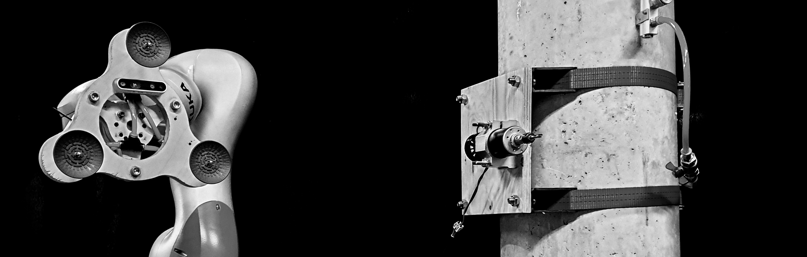
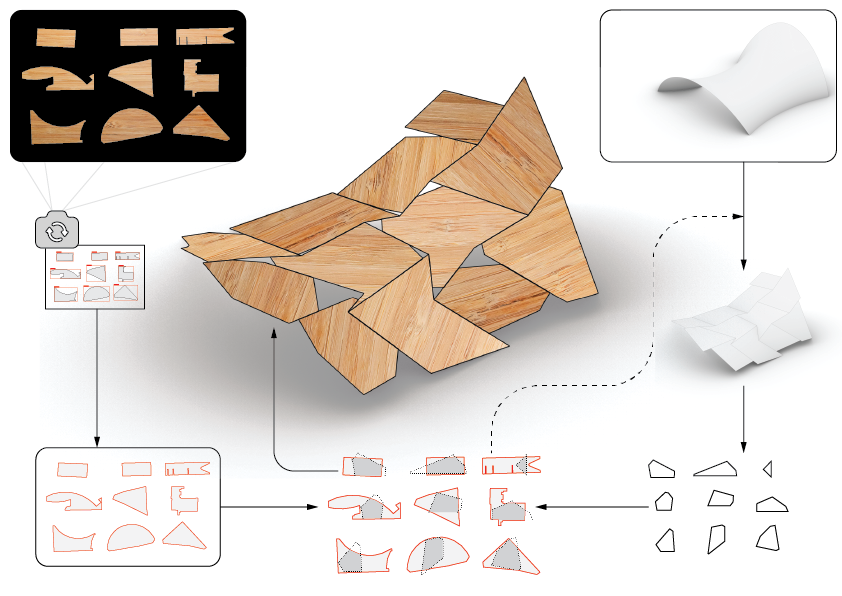

‘Still Alive’ is a data based process to produce new solutions from waste material. Using computer vision, autonomous fabrication, robotics, and generative design process our aim to convert existing ‘waste’ materials to a resource based on the upcycling process. ‘Still Alive’ is the new way solution to transform un-standard material of waste into a new resource for the construction sector. Rather than to use extra energy, cost, and chemical process on natural material, we upcycle the material in energy-intensive processes. Our solution is adding value on the waste material through a process of ‘autonomous’ 3D scanning and robotic fabrication.
Problem:
INDUSTRIAL WASTE MATERIALS
WHY IS THE WASTE A PROBLEM?
Industrial waste is the waste produced by industrial activity which includes any material that is rendered useless during a manufacturing process such as that of factories, industries, mills, and mining operations. Types of industrial waste include dirt and gravel, masonry and concrete, scrap metal, oil, solvents, chemicals, scrap lumber, even vegetable matter from restaurants.
The wastes represent a major problem for the environment because the air pollution (the dust and very fine particles which spread in the atmosphere) and leaching toxic chemicals when are dumped in landfills, quarries, rivers or oceans. The capitalization of waste is difficult because of their variety, as well as their unknown properties over time.
Lately, environmental sustainability became an important problem from the point of view of natural resources and that of wastes. The construction and the building materials sectors are involved in both processes: building industry is the largest user of natural materials and in addition, a large amount of wastes results from the demolition of constructions.
CONSTRUCTION WASTE?
Construction waste material refers to the materials from the construction location that cannot be used for construction purposes and must be removed for many reasons. In the implementation of a building construction project, it can be avoided the residual of construction material or commonly called construction waste. Besides effects on the cost, construction waste also affects to the environmental. Some of the notable research included that the EPA estimates demolished buildings contribute 1 Billion feet of usable lumber per year. It also states that 58% of that timber would end up in the landfill. It became clear very quickly to us that this was a big problem to tackle with huge potential and impact.
- 35 % ( or 136 million tons ) of waste generated each year from buildings, construction, and demolition.
- 1 billion feet of usable lumber per year from demolished buildings.
- 58% of timber ends up being thrown away and going to the landfill.
CURRENT WASTE MANAGEMENT SOLUTIONS
WHAT ABOUT THE ENVIRONMENT?
Depending on the type of material, its thickness and weather conditions, the decomposition time of certain types of waste can be extremely long. For example, a glass bottle can take 4000 years to decompose. At landfills, the jumbled mess of waste is compressed which results in the anaerobic decomposition of organic matter, a phenomenon that produces leachate and biogas. Directly flowing into the lakes and rivers, leachate can be severely harmful to wildlife and it can poison animals drinking such polluted water. Even though landfills should meet air-tight requirements to prevent soil and water pollution, leakages into the environment are an unfortunate inevitability. Plastic is versatile, lightweight, flexible, moisture resistant, strong, and relatively inexpensive. Those are the attractive qualities that lead us, around the world, to such a voracious appetite and over-consumption of plastic goods. However, durable and very slow to degrade, plastic materials that are used in the production of so many products all, ultimately, become waste with staying power.
Solution:
UPCYCLING
Solving the problems of recycling
Upcycling is the opposite of downcycling, which is the other face of the recycling process. Downcycling involves converting materials and products into new materials of lesser quality. Most recycling involves converting or extracting useful materials from a product and creating a different product or material. the goal of upcycling is to prevent wasting potentially useful materials by making use of existing ones. This reduces the consumption of new raw materials when creating new products. Reducing the use of new raw materials can result in a reduction of energy usage, air pollution, water pollution and even greenhouse gas emissions.
CASE STUDY
WOOD WASTE
The waste resulted from a wood processing is influenced by the diameter of logs being processed, type of saw, specification of product required and skill of workers. Generally, the waste from wood industries such as saw millings and plywood, veneer and others are sawdust, off-cuts, trims, and shavings.
State-of-the-Art
Upcycling state-of-the-art is considered to be upcycling the waste material back into standard format of the material.
Proposal:
NON-STANDARD SOLUTION FOR NON-STANDARD MATERIALS
Integrity between the problem and the solution
The current upcycling procedures have proven ineffective due to inefficiency in extracting standardized usable material from the waste material and its added time and energy consumption. The proposed solution tackles these problems by removing the extra steps of upcycling the material to the standard form and integrating the non-standard properties of the material into the design.
Still Alive is the data-driven process to produce new solutions from waste material. Using computer vision, autonomous fabrication, robotics, and generative design process our aim to convert existing ‘waste’ materials to a resource based on the upcycling process.
Still Alive is the new way solution to transform non-standard material of waste into a new resource. Rather than to use extra energy, cost, and chemical process on natural material, we upcycle the material in energy-intensive processes. Our solution is adding value on the waste material through a process of ‘autonomous’ 3D scanning and robotic fabrication.
IMPLEMENTATION
In a non-standard process, each piece is unique. So first we need to know our material to extract data from it. Therefore we need to scan every piece of material. But for the industry, we will be dealing with a huge amount of material. So we need this system to be autonomous and reliable. Beside of that, the manual process is out of the question due to the scale.
To demonstrate this process we set up a system to implement this idea over an example of scrap woods. In our case, we deal with different shape of waste material. We extract the information into a database by autonomous scanning. Using a robotic arm to find the scrap and extract the data through remote sensing saving into a database and sorting the physical material through pick and place process.
Learn more about the different steps of this project:

VISION
Here goes the vision by Ediii . . .
Acknowledment
IAAC (Alex, Aldo, Kunal Kadha) [Initial Project], HAZAL YILMAZ, EDOUARDO CHAMORRO, Good Wood Team